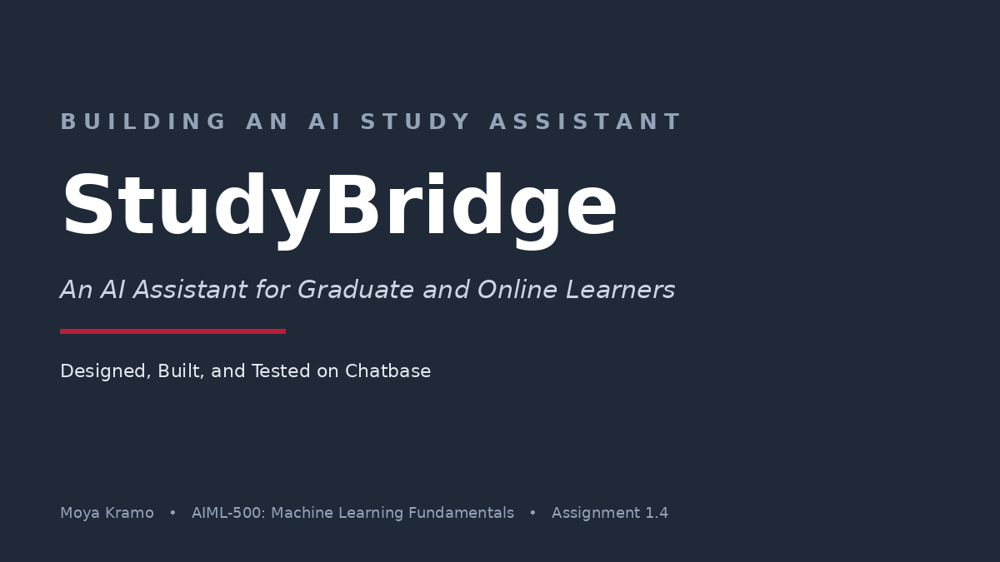

Beyond the hype.
Practical AI for better decisions.
Hi, I'm Moya. With a background in finance and a focus on artificial intelligence and machine learning, I bridge the gap between technical innovation and real-world decision-making, making AI practical, understandable, and actionable.
Built for you if…
No matter your role, the goal is the same: understanding where AI creates real value.
You're in finance
Finance professionals evaluating where AI creates genuine competitive advantage.
You're a founder or entrepreneur
Building AI products or integrating AI into your business with clarity and purpose.
You're a strategy leader
Leading AI adoption and looking to ask better questions and make smarter decisions.
You're an AI enthusiast
Curious about where the field is really going beyond the headlines.
The through-line
I help businesses and professionals understand what AI can actually do, where it creates meaningful value, and how to apply it with confidence. My goal is to replace confusion and hype with clarity, practical insight, and informed decision-making.
Latest artifact
A growing library of practical resources designed to provide context, insight, and useful starting points.

StudyBridge: Building an AI Study Assistant
A live AI chatbot for graduate and online learners, designed with a human-centered framework and tested against firm academic-integrity boundaries.
Explore →
The Evolution of AI: A Visual Timeline
A five-minute grounding in AI's history, from Turing and the two AI winters to today's generative and agentic era.
Explore →